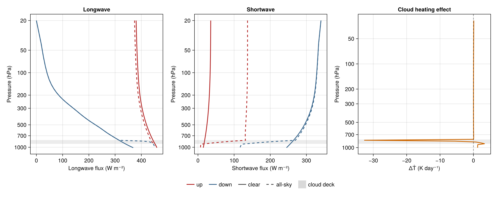

All-sky column: cloud radiative effect
This example asks one question: for a single column defined once physically, what longwave and shortwave cloud radiative effect does one prescribed liquid cloud deck produce through the staged all-sky path? Two solves on the same gas optics — clear and all-sky — and their difference is the answer. Every number below is an outcome of this prescribed configuration; nothing is asserted about clouds in general.
Sign conventions, stated mathematically: with $F_{net} = F^{↓} - F^{↑}$ at an interface, the cloud radiative effect is $CRE = F_{net}^{all} - F_{net}^{clear}$, reported per stream and in total at the top of the atmosphere and at the surface.
using NumericalRadiation
using NCDatasets # NetCDF reader extension (ecCKD files)
using PrintfThe column
The gas state reuses the family column of the correlated-k spread page: $N$ layers with interface pressures $pᵢ$ (Pa, top of atmosphere first), an idealized capped lapse rate, analytic moisture and ozone profiles, and the full ecCKD gas activation.
N = 48
pᵢ = collect(range(2_000, 101_325; length = N + 1))
p = 0.5 .* (pᵢ[1:end-1] .+ pᵢ[2:end])
Tₛ = 300
T = clamp.(Tₛ .- 65 .* (1 .- (p ./ 101_325) .^ 0.286), 200, Tₛ)
Tᵢ = clamp.(Tₛ .- 65 .* (1 .- (pᵢ ./ 101_325) .^ 0.286), 200, Tₛ)
χH₂O = @. 0.015 * (p / 101_325)^3 + 3e-6
χO₃ = @. 3e-8 + 5e-6 * (2_000 / p)
g = 9.80665 # m s⁻²
mᵈ = 0.028964 # kg mol⁻¹
mᵛ = 0.018016 # kg mol⁻¹
nᵈ = [(pᵢ[k + 1] - pᵢ[k]) / (g * (mᵈ + mᵛ * χH₂O[k])) for k in 1:N]
atmosphere = ColumnAtmosphere(;
pressure_layers = p,
pressure_interfaces = pᵢ,
temperature_layers = T,
temperature_interfaces = Tᵢ,
gases = (composite = nᵈ,
h2o = χH₂O .* nᵈ,
o3 = χO₃ .* nᵈ,
co2 = 420e-6 .* nᵈ,
ch4 = 1.8e-6 .* nᵈ,
n2o = 330e-9 .* nᵈ,
cfc11 = 0,
cfc12 = 0),
surface = (temperature = Tₛ,),
geometry = (cos_zenith = 0.5,))The prescribed cloud
One liquid deck between 800 and 900 hPa: cloud fraction 0.8 inside the deck and zero elsewhere, with a per-layer in-cloud liquid water path that sums to 60 g m⁻² over the deck — the cloudy-region optics use it unscaled by cloud fraction, so this is the water path of the cloudy portion of each layer, not a grid-mean value. The deck must be nonempty on this grid, asserted below. The cloud optical coefficients are idealized broadband liquid values, prescribed here — a longwave mass absorption of 140 m² kg⁻¹ and a shortwave mass extinction of 160 m² kg⁻¹ with single-scattering albedo 0.995 and asymmetry 0.85. They are stand-ins of plausible magnitude, not derived from the ecCKD tables or any scattering database.
deck = findall(k -> 80_000 <= p[k] <= 90_000, 1:N)
cloud_fraction = zeros(N)
cloud_fraction[deck] .= 0.8
@assert !isempty(deck)
liquid_water_path = zeros(N)
liquid_water_path[deck] .= 0.060 / length(deck) # in-cloud, kg m⁻² per layer
cloud_model = LayerLiquidIceCloudOpticsModel(;
liquid_water_path,
ice_water_path = 0,
cloud_fraction,
liquid_longwave_mass_absorption = 140,
ice_longwave_mass_absorption = 0,
liquid_shortwave_mass_extinction = 160,
ice_shortwave_mass_extinction = 0,
liquid_shortwave_single_scattering_albedo = 0.995,
liquid_shortwave_scattering_asymmetry = 0.85)Clear and cloudy optics, separately owned
The clear gas optics fill one set of containers; the cloudy-region optics fill a separate set, so composing cloud optical depths into the cloudy containers cannot touch the clear reference. That non-aliasing contract is gate-verified below, not assumed.
gas_optics = read_official_ecckd_gas_optics("32x32";
names = (:composite, :h2o, :o3, :co2, :ch4, :n2o, :cfc11, :cfc12))
function gas_optics_containers()
longwave_gpoints = length(gas_optics.longwave_weights)
shortwave_gpoints = length(gas_optics.shortwave_weights)
longwave = LongwaveOpticalProperties(zeros(longwave_gpoints, N),
zeros(longwave_gpoints, N);
source_top = zeros(longwave_gpoints, N),
source_bottom = zeros(longwave_gpoints, N),
weights = zeros(longwave_gpoints))
shortwave = ShortwaveOpticalProperties(zeros(shortwave_gpoints, N);
rayleigh_optical_depth = zeros(shortwave_gpoints, N),
scattering_asymmetry = zeros(shortwave_gpoints, N),
weights = zeros(shortwave_gpoints))
return longwave, shortwave
end
clear_longwave, clear_shortwave = gas_optics_containers()
cloudy_longwave, cloudy_shortwave = gas_optics_containers()
optical_properties!(clear_longwave, clear_shortwave, gas_optics, atmosphere)
optical_properties!(cloudy_longwave, cloudy_shortwave, gas_optics, atmosphere)
optics_state(longwave, shortwave) =
(longwave.optical_depth, longwave.source, longwave.source_top,
longwave.source_bottom, longwave.weights,
shortwave.optical_depth, shortwave.rayleigh_optical_depth,
shortwave.scattering_asymmetry, shortwave.weights)
clear_snapshot = deepcopy(optics_state(clear_longwave, clear_shortwave))Before any cloud is composed, the two independently evaluated gas-optics container sets must be element-identical — same inputs, same outputs. This is a different property from the post-composition non-mutation gate below, and both are asserted against the same exact snapshot:
@assert isequal(clear_snapshot, optics_state(cloudy_longwave, cloudy_shortwave))The in-cloud (unscaled) optical depths come from cloudy_region_optical_properties! and are added to the cloudy containers only:
cloud = CloudyRegionCloudOpticalProperties(zeros(N), zeros(N - 1),
zeros(N), zeros(N);
shortwave_scattering_optical_depth = zeros(N),
shortwave_scattering_asymmetry = zeros(N))
cloudy_region_optical_properties!(cloud, cloud_model, atmosphere)
add_cloud_optical_depths!(cloudy_longwave, cloudy_shortwave,
CloudOpticalProperties(cloud.longwave_optical_depth,
cloud.shortwave_optical_depth;
shortwave_scattering_optical_depth =
cloud.shortwave_scattering_optical_depth,
shortwave_scattering_asymmetry =
cloud.shortwave_scattering_asymmetry))Two solves per stream
Both streams use the :adding overlap mode — one explicit transport choice for the whole page. The longwave surface boundary is the model's per-g Planck emission; the shortwave boundary is a prescribed global-mean insolation over an idealized dark surface.
longwave_boundary = LongwaveBoundaryConditions(
surface_longwave_up = surface_longwave_emission(gas_optics, Tₛ))
shortwave_boundary = ShortwaveBoundaryConditions(toa_shortwave_down = 340.25,
surface_albedo = 0.06)
flux_containers() = RadiativeFluxes(longwave_up = zeros(N + 1),
longwave_down = zeros(N + 1),
shortwave_up = zeros(N + 1),
shortwave_down = zeros(N + 1))
clear_fluxes = flux_containers()
radiative_fluxes!(clear_fluxes, CloudlessLongwave(), clear_longwave,
atmosphere, longwave_boundary)
radiative_fluxes!(clear_fluxes, CloudlessShortwave(), clear_shortwave,
atmosphere, shortwave_boundary)
allsky_fluxes = flux_containers()
radiative_fluxes!(allsky_fluxes, CloudOverlapLongwave(overlap = :adding),
LongwaveCloudOverlapOpticalProperties(clear_longwave,
cloudy_longwave,
cloud.cloud_fraction),
atmosphere, longwave_boundary)
radiative_fluxes!(allsky_fluxes, CloudOverlapShortwave(overlap = :adding),
ShortwaveCloudOverlapOpticalProperties(clear_shortwave,
cloudy_shortwave,
cloud.cloud_fraction),
atmosphere, shortwave_boundary)
clear_Ṫ = zeros(N)
allsky_Ṫ = zeros(N)
heating_rates!(clear_Ṫ, clear_fluxes, atmosphere; gravity = g, heat_capacity = 1004)
heating_rates!(allsky_Ṫ, allsky_fluxes, atmosphere; gravity = g, heat_capacity = 1004)Gates
The clear containers must be element-identical to their pre-composition snapshots — the CRE below is only meaningful if the clear reference was never touched — and every flux must be finite:
@assert isequal(clear_snapshot, optics_state(clear_longwave, clear_shortwave))
for fluxes in (clear_fluxes, allsky_fluxes)
@assert all(all(isfinite, f) for f in (fluxes.longwave_up, fluxes.longwave_down,
fluxes.shortwave_up, fluxes.shortwave_down))
end
println("gates passed: independently evaluated gas states identical, " *
"clear reference preserved exactly, all fluxes finite")gates passed: independently evaluated gas states identical, clear reference preserved exactly, all fluxes finite
The cloud radiative effect
net(down, up) = down .- up
longwave_cre = net(allsky_fluxes.longwave_down, allsky_fluxes.longwave_up) .-
net(clear_fluxes.longwave_down, clear_fluxes.longwave_up)
shortwave_cre = net(allsky_fluxes.shortwave_down, allsky_fluxes.shortwave_up) .-
net(clear_fluxes.shortwave_down, clear_fluxes.shortwave_up)
@printf(" TOA surface\n")
@printf("longwave CRE %+8.2f %+8.2f W m⁻²\n", longwave_cre[1], longwave_cre[end])
@printf("shortwave CRE %+8.2f %+8.2f W m⁻²\n", shortwave_cre[1], shortwave_cre[end])
@printf("total CRE %+8.2f %+8.2f W m⁻²\n",
longwave_cre[1] + shortwave_cre[1], longwave_cre[end] + shortwave_cre[end]) TOA surface
longwave CRE +6.09 +84.58 W m⁻²
shortwave CRE -101.77 -121.08 W m⁻²
total CRE -95.68 -36.50 W m⁻²
The signs above are reported outcomes for this prescribed deck and coefficients, not invariants.
Clear against all-sky, panel by panel
In the flux panels, color encodes the stream direction and line style the sky (solid clear, dashed all-sky); the third panel plots the cloud-induced instantaneous heating difference $ΔṪ$ directly. The gray band marks the prescribed cloud deck.
using CairoMakie
fig = Figure(size = (1260, 500))
pressure_ticks = [20, 50, 100, 200, 300, 500, 700, 1000]
axes3 = map(enumerate((("Longwave flux (W m⁻²)", "Longwave"),
("Shortwave flux (W m⁻²)", "Shortwave"),
("ΔṪ (K day⁻¹)", "Cloud heating effect")))) do (i, (xlabel, title))
ax = Axis(fig[1, i]; xlabel, ylabel = "Pressure (hPa)",
yscale = log10, yreversed = true,
yticks = (pressure_ticks, string.(pressure_ticks)), title)
hspan!(ax, 800, 900; color = (:gray, 0.15))
ax
end
lines!(axes3[1], clear_fluxes.longwave_up, pᵢ ./ 100;
color = :firebrick, linewidth = 2)
lines!(axes3[1], allsky_fluxes.longwave_up, pᵢ ./ 100;
color = :firebrick, linewidth = 2, linestyle = :dash)
lines!(axes3[1], clear_fluxes.longwave_down, pᵢ ./ 100;
color = :steelblue4, linewidth = 2)
lines!(axes3[1], allsky_fluxes.longwave_down, pᵢ ./ 100;
color = :steelblue4, linewidth = 2, linestyle = :dash)
lines!(axes3[2], clear_fluxes.shortwave_up, pᵢ ./ 100;
color = :firebrick, linewidth = 2)
lines!(axes3[2], allsky_fluxes.shortwave_up, pᵢ ./ 100;
color = :firebrick, linewidth = 2, linestyle = :dash)
lines!(axes3[2], clear_fluxes.shortwave_down, pᵢ ./ 100;
color = :steelblue4, linewidth = 2)
lines!(axes3[2], allsky_fluxes.shortwave_down, pᵢ ./ 100;
color = :steelblue4, linewidth = 2, linestyle = :dash)
ΔṪ = (allsky_Ṫ .- clear_Ṫ) .* 86_400
@assert all(isfinite, ΔṪ)
lines!(axes3[3], ΔṪ, p ./ 100; color = :darkorange3, linewidth = 2)
vlines!(axes3[3], [0]; color = (:black, 0.4), linestyle = :dash)
legend_entries = [LineElement(color = :firebrick, linewidth = 2),
LineElement(color = :steelblue4, linewidth = 2),
LineElement(color = :gray30, linewidth = 2, linestyle = :solid),
LineElement(color = :gray30, linewidth = 2, linestyle = :dash),
PolyElement(color = (:gray, 0.3))]
Legend(fig[2, 1:3], legend_entries,
["up", "down", "clear", "all-sky", "cloud deck"];
orientation = :horizontal, framevisible = false)

The panels show what the printed table summarizes: for this prescribed deck the longwave difference appears above the cloud as reduced upwelling flux, the shortwave difference as increased reflection above and reduced transmission below, and the cloud heating effect concentrates at the deck boundaries. The ≈ −35 K day⁻¹ excursion at the cloud edge is an instantaneous layer tendency produced by the sharp prescribed deck and the idealized broadband coefficients — a feature of this configuration, not a general cloud-heating magnitude. All of it is a difference between two solves on identical, gate-verified gas optics; the page measures this configuration and ranks nothing.
This page was generated using Literate.jl.